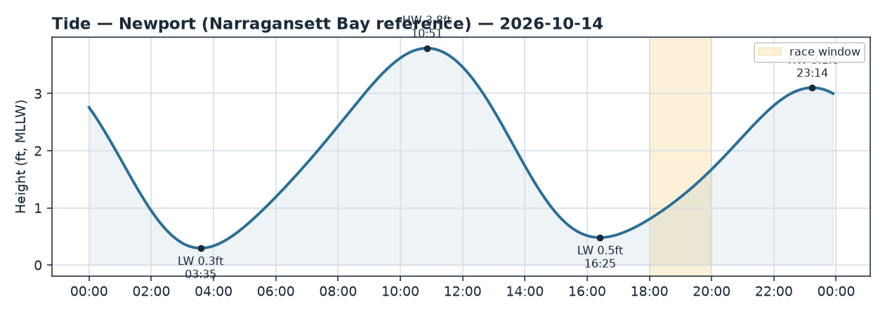
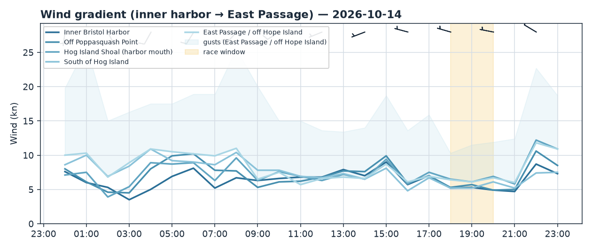
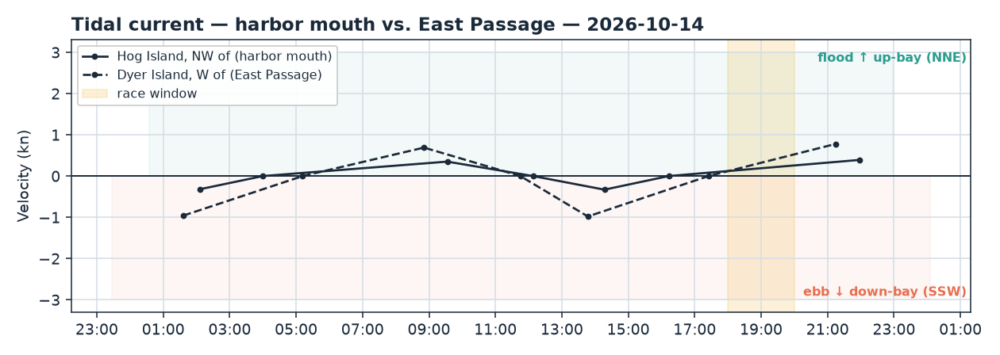

Bristol Harbor · Rhode Island
Wed 14 Oct 2026 · 18:00–20:00
Shifty NW land breeze — forecast soft (5–6 kt) but live obs run 10–15 kt, so sail the stronger regime; early flood building NNE up-bay against the wind, low water just before the start
Wind
A NW/W gradient breeze off the Bristol and Poppasquash land — direction sits around 290° (NW) and backs a touch into the high 270s–280s (toward the W) over the window, which is classic shifty, puffy northerly-regime stuff rather than a clean sea breeze.
Trust the obs over the model numbers here. HRRR and GFS paint a soft 5–6.5 kt, ECMWF a firmer ~8, but wind_check has the live anemometers running 1.4× the model (obs mean ~10 kt vs model ~7), and NWS backs that up with NW 10–15 kt gusting 20. Conimicut up the Passage is averaging ~9 kt (peaks to 14.6) from the W, Newport at the mouth ~8 kt WSW. Plan on a shifty 10–15 kt from the NW with gusts into the high teens, not the light-air number the models show.
Across the fixes the pressure leans seaward and at the harbor mouth: Hog Island Shoal (6.5 kt) and the East Passage (6.4 kt) are the strongest, the inner harbor (5.1 kt) the softest, and off Poppasquash Point the breeze backs hardest (into the W, 277°) — the signature of Poppasquash Neck casting its lee to the E/SE. Expect a dead patch tucked under that western shore and the breeze veering back toward the N/NW as you clear the shadow.
Current
The window opens just into a building flood. At the harbor mouth (Hog Island NW) slack was 16:13; the flood then builds to ~0.39 kt by 21:57 — so through 18:00–20:00 the set is NNE (~011°, up-bay into the harbor), modest but strengthening. In the East Passage (Dyer Island W) slack was 17:25, flood building to a stout ~0.78 kt by 21:15 — the channel runs harder, ~023° NNE up-bay, and is the real player on any seaward leg.
Note the wind-against-current setup: NW breeze over a NNE-setting flood will stack short, steep chop in the entrance gut and the Passage — keep the bow moving in the slop.
Tide
Low water 16:25 (0.48 ft) sits just before the start, with the tide rising all window toward high at 23:14 (3.1 ft). It's near the bottom of the tide as you launch — mind thin water over shallow marks and committee-boat depth near the harbor edges early, though it's filling steadily through the race.
Tactical call
Course-agnostic: This is a shift game, not a side game. The NW land breeze is oscillating and puffy — stay in phase with the veers (toward the NW) and backs (toward the W) rather than banging a corner, and keep your head out for the darker pressure. Pressure modestly favours the harbor mouth (Hog Island Shoal) and seaward (East Passage); the inner harbor and the lee E/SE of Poppasquash Neck are the soft spots — don't park in the Poppasquash shadow. On current: the flood is NNE up-bay, so heading N (up-bay) ride the channel push, and heading S (seaward) against the flood, cheat the shore edges to dodge the adverse set — strongest in the Passage channel. Expect the worst chop right in the mouth where wind opposes current.
If the course is set: - N–S windward/leeward — the E–W pressure/shear gradient is small; let the NW oscillations decide your tacks. Going N you get the flood push, going S you're punching it — favour the shore edges on the seaward beat. - J-hook out of the harbor — start in the near-slack, softer inner harbor (play shifts), then hook into the mouth's building flood and firmer breeze; the up-bay set helps you back toward the harbor, hurts you reaching seaward. - Around Hog Island — flood NNE all the way round: the push flips leg-by-leg, so ride the channel on the up-bay legs and hunt the shallows on the seaward legs. Expect the steepest chop off the NW tip in the gut. - Out-and-back (light-air style) — if it goes soft per the models, get to the seaward pressure (Hog south / East Passage); but with obs this strong, treat it as a breeze day and prioritise staying in the NW shifts.
Mild caution: offshore wind obs at Block Island were unavailable for this window, so the seaward strength read leans on Newport/Conimicut and NWS.
Charts: briefs/2026-10-14_wind.png, briefs/2026-10-14_current.png, briefs/2026-10-14_tide.png.


